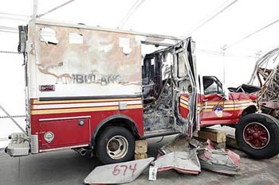

| Bottom | homepage |
|
|
|
|
|
Why Indeed |
|
|
Anomalies at the WTC and the Hutchison Effect
(page 1)
by
Dr. Judy Wood and John Hutchison
This page last updated, April 1, 2008(Not-yet final; minor updates still being made.)
I. Effects of Lift and/or Disruption Top
|
|
| Figure 1. “The Hutchison Effect,” filmed (11/29/07) This video can be downloadable here: mpg. (4.7 MB) (0:00:00) URL, Source: HutchisonPE.swf |
The Hutchison Effect Top
| The Hutchison Effect -- An Explanation, by Mark A. Solis |
| "The Lift and Disruption System or the Hutchison Effect is divided primarily into two categories of phenomena: propulsive and energetic The system is capable of inducing lift and translation in bodies of any material. That means it will propel bodies upwards, and it will also move them sideways. There are actually 4 kinds of trajectories which are capable of being produced and I'll explain these shortly. It also has very strange energetic properties including severely disrupting intermolecular bonds in any material resulting in catastrophic and disruptive fracturing, samples of which are described here. It is also capable of causing controlled plastic deformation in metals, creating unusual aurora-like lighting effects in mid-air, causing changes in chemical composition of metals (it varies the distribution of the chemical content), and other long-range effects at distances up to around 80 feet {24 metres) away from the central core of the apparatus — all at low power and at a distance." |
| Figure 2. Note the phrases, "..severely disrupting intermolecular bonds in any material..." and "" "...changes in chemical composition of metals..." (1996) Source: The Hutchison File, or archived (searchable) page 17 of 87 |
|
The Experiment
A complex high voltage, high frequency apparatus was assembled which when properly adjusted caused various material objects to accelerate in a vertical direction, against the gravitational field. Under some set of as yet undefined conditions, and particularly when "lift" does not take place, a target specimen will be fractured or disrupted in a catastrophic manner. A less frequent phenomenon is the apparent heating to incandescence of iron and steel specimens having high length to width rations. This event is not accompanied by the heating, charring or the burning of combustible materials in contact with the specimen throughout the duration of the event of about two minutes. The fracturing of certain iron and steel geometries accompanied by an anomalous residual magnetic field, permanent in nature, is not uncommon. Permanent and dramatic alterations in the physical and chemical structure of certain metallic alloys have been documented via mass spectrographic data. These effects do not appear to be specific to any particular type or class of material. |
| Figure 3. by Richard Sparks, Scientific and Technical Intelligence/SBIR, Ottawa. [emphasis added] Bingo! The weird fires that aren't hot. (1996) Source: The Hutchison File, or archived (searchable) page 67 of 87. |
Lift Top
|
|
| Figure 4. Red Bull Can (0:00:00) URL This video of the Red Bull Can can be downloadable here: mpg. (3.2 MB) Source: redbull.swf |
 |
||
| Figure 5. I (9/12?/01) Source: |
Figure 6. I (9/12?/01) Source: |
Figure 7. I (?/?/?) Source: |
 |
| Figure 8. I (9/12?/01) Source: |
 |
|
| Figure 9. I (?/?/?) Source: |
Figure 10. I (9/12?/01) Source: |
 |
|
| Figure 11. I (prior to 9/11/01) Source: |
Figure 12. 02102v_c.jpg (trimmed) 02102v.jpg (original) (9/11?/01) Source: |
|
choose
|
choose
|
| Figure 13. millenium_hilton_wtc_cl.jpg (prior to 9/11/01) Source: |
Figure 13. millenium_hilton_wtc_c.jpg (prior to 9/11/01) Source: |
| First Responder Statement: RENE DAVILA | ||
| File No. 9110075 WORLD TRADE CENTER TASK FORCE INTERVIEW LIEUTENANT RENE DAVILA Interview Date: October 12, 2001 [Emphasis added.] |
||
| A. ...I remember one guy was laying down. He had an open chest wound about the size of my fist in his right chest. I kept on looking. I knew what was coming. I knew he was going to go downhill. He had that look in his eye like -- he wasn't even talking. He was going into shock. All of a sudden you heard the rumble and people yelling and screaming. You look andyou see -- I didn't see the top of the building. I didn't see the top of tower two. The collapse started. You felt like the ground -- it was like a deep sound, rumble; like you're laying on the platform and the D train is coming. You look and you see what -- I best describe it as a wave coming. I started running in my direction. I started running into the hotel. Somethingknocked me. I don't know whether it was -- Q. The Millennium? A. We were in front of the Millennium. I'm talking going in through the lobby. Q. Okay. A. Something knocked me down. I don't know if something hit my helmet or whether it was a force. I got down, and I thought I've got to get up. By the time I got up, it was like [sound] I'm overcome by black and I'm running in the building in this black, and I'm running and I'm running and I'm running. The next thing I know, I see a little light, and I follow that light. I run in there,and I find I'm in an office, and I close the door. I close the door and then I start walking, and I'm panicked, I'm panicked. I lost it. I lost it for a few minutes in here. In this room there's nothing but computers, maybe five, six computers, and phones. As I'm in there, this force is still coming through the cracks of the door. I see some coats and I saw a water fountain. So I wet them, and I wet them and I stuff them under. I'm like walking back and forth, "I'm a medic. I'm a medic. I'm not a fucking firefighter. What do you do? What do you do? What do you do?" |
||
|
Windows Top
| Figure 14. I (9/11/01) Source: |
Figure 15. I (9/18/01) Source: |
Figure 16. I (9/11/01) Source: |
 |
|
| Figure 17. I (9/21/01) Source: |
Figure 18. I (9/11/01) < ? < (9/11/01) Source: |
 |
[NEED TO ADD] |
| Figure 19a. Round holes through glass, looking out of the One Liberty Plaza Bldg., over the remains of WTC4 and WTC5, with WFC2 in the distance, viewed through the farl-left window. Wilson10746124-D_windowhole.jpg., (after 9/11/01) Source |
Figure 19b. John's example of round holes in glass (?/?/02) Source |
 |
 |
|
| Figure 20a. Round holes in WFC2 (9/?/01) Source: |
Figure 20b. windows_c.jpg (9/?/01) Source: |
Figure 20c. windows_cm.jpg (9/?/01) Source: |
Casimir Force Top
| Physicists have 'solved' mystery of levitation By Roger Highfield, Science Editor Last Updated: 1:41am BST 08/08/2007 Levitation has been elevated from being pure science fiction to science fact, according to a study reported today by physicists.
Now, in another report that sounds like it comes out of the pages of a Harry Potter book, the University of St Andrews team has created an 'incredible levitation effects' by engineering the force of nature which normally causes objects to stick together. Professor Ulf Leonhardt and Dr Thomas Philbin, from the University of St Andrews in Scotland, have worked out a way of reversing this pheneomenon, known as the Casimir force, so that it repels instead of attracts. Their discovery could ultimately lead to frictionless micro-machines with moving parts that levitate But they say that, in principle at least, the same effect could be used to levitate bigger objects too, even a person. The Casimir force is a consequence of quantum mechanics, the theory that describes the world of atoms and subatomic particles that is not only the most successful theory of physics but also the most baffling. The force is due to neither electrical charge or gravity, for example, but the fluctuations in all-pervasive energy fields in the intervening empty space between the objects and is one reason atoms stick together, also explaining a "dry glue" effect that enables a gecko to walk across a ceiling. Now, using a special lens of a kind that has already been built, Prof Ulf Leonhardt and Dr Thomas Philbin report in the New Journal of Physics they can engineer the Casimir force to repel, rather than attact. Because the Casimir force causes problems for nanotechnologists, who are trying to build electrical circuits and tiny mechanical devices on silicon chips, among other things, the team believes the feat could initially be used to stop tiny objects from sticking to each other. Prof Leonhardt explained,
The practicalities of designing the lens to do this are daunting but not impossible and levitation "could happen over quite a distance". Prof Leonhardt leads one of four teams - three of them in Britain - to have put forward a theory in a peer-reviewed journal to achieve invisibility by making light waves flow around an object - just as a river flows undisturbed around a smooth rock. |
|||||
| Figure 25. Physicists have 'solved' mystery of levitation By Roger Highfield, Science Editor, 08/08/2007 (8/08/07) Source: |

{kind=link}
Disruption: Molecular Dissociation and Transmutation Top
|
|
| Figure 1. “The Hutchison Effect,” filmed (6/06) This video can be downloadable here: mpg. (4.7 MB) (0:00:00) URL, Source: HutchisonPE.swf |
 |
 |
| Figure 27. Picture+626.jpg (11/29/07?) Source: blog |
Figure 28. Picture+628.jpg (11/29/07?) Source: blog |
 |
 |
 |
| Figure 29. Picture+633.jpg (11/29/07?) Source: blog |
Figure 30. Picture+636.jpg (11/29/07?) Source: blog |
Figure 31. Picture+637.jpg (11/29/07?) Source: blog |
{kind=link}
 |
 |
 |
| Figure 32. Picture+642.jpg (11/29/07?) Source: blog |
Figure 33. Picture+649.jpg (11/29/07?) Source: blog |
Figure 34. Picture+650.jpg (11/29/07?) Source: blog |
 |
 |
| Figure 35. Picture+651.jpg (11/29/07?) Source: blog |
Figure 36. Picture+756.jpg (11/29/07?) Source: blog |
 |
| Figure 37. wtc1demobelow.gif (9/11/01) Source: terrorize.dk |
 |
|
 |
| Figure 38. "Shaving cream"/"Alkaseltzer" (9/11/01) Source: Shannon Stapleton, Reuters |
Figure 39. WTCExplosionLeftSide2.swf (11/29/07?) Source: |
Figure 40. "Shaving cream"/"Alkaseltzer" (9/11/01) Source |
Transmutation and "Rustification" Top
 |
||
| Figure 41. I (after 9/11/01) Source: |
Figure 42. I (after 9/11/01) Source: |
Figure 43. I (after 9/11/01) Source: |
{kind=link}
{kind=link}
 |
 |
 |
| Figure 45. Stainless Steel Picture+346.jpg (?/?/?) Source: |
Figure 46. Stainless Steel Picture+347.jpg (?/?/?) Source: |
Figure 47. Stainless Steel Picture+348.jpg (?/?/?) Source: |
{kind=link}
 |
|
| Figure 48. ?????????? rust (?/?/?) Source: |
Figure 49. ?????????? rust (?/?/?) Source: |
 |
|
| Figure 50. Stainless Steel (original) (?/?/?) Source: |
Figure 44. ?????????? Picture+362.jpg (?/?/?) Source: |
Toasted Metal Top
 |
 |
| Figure 56. 010911_WTC6_911_1328.jpg. (9/11/01) Source |
Figure 74. Why does this ambulance have melted inside doors? The inside looks to have suffered more heat damage than the outside. What would cause that?
Source |
 |
 |
| Figure 58. Picture+625.jpg (11/29/07?) Source: blog |
Figure 59. Picture+508.jpg (11/29/07?) Source: blog |
| Figure 60a. Toasty Aluminum (lightened, contrast, cut) (original) (9/18/01) Source: |
Figure 61a. Toasty Aluminum (original) (9/18/01) Source: |
|
|
||
| Figure 80. Round holes through glass, looking out of the One Liberty Plaza Bldg., over the remains of WTC4 and WTC5, with WFC2 in the distance, viewed through the farl-left window. (after 9/1/01) Source: Wilson10746124-D_windowhole.jpg. |
Figure 81. How glass typically breaks Source: site: broken-window.jpg |
Figure 91. How glass typically breaks Source: broken-window2.jpg |
| Figure 87. Cartoon sticker showing how glass typically breaks Source: shatterbaseball.jpg |
Figure 82. How glass typically breaks Source: copy-of-dsc00757.jpg |
Figure 85. How glass typically breaks Source: thwarted.jpg |
Figure 83. How glass typically breaks broken-window-evreux.jpg Source: |
| Figure 90. Window sticker showing how glass typically breaks Source: GlassBreakFilm.jpg |
Figure 88. How glass typically breaks Source: smashglass.jpg |
Figure 86. How glass typically breaks Source: synp.jpg |
Figure 89. How glass typically breaks Source: broken.jpg |
|
Continue to next page.
|
| Top | homepage |
|
|
|
|
|
Why Indeed |
|
|
|